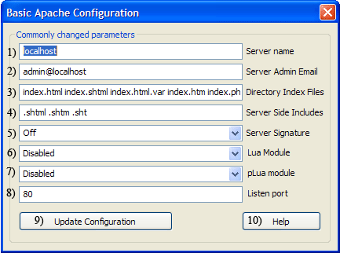

|
|
Mod pLua |
The Uniform Server ZeroXI plugin ZeroXI_lua_1_0_1 provides support for mod pLua. Mod pLua is a third party module, which allows both pure and mixed HTML/Lua code.
This page covers enabling Mod-pLua and provides detailed configuration information.
Apache configuration
A default installation of Uniform Server ZeroXI has pLua pre-configured in Apache’s configuration file. All that is required is to enable the pLua module from UniController as follows:
Apache > Edit Basic and Modules > Edit Basic Configuration
Apache’s configuration file UniServerZ\core\apache2\conf\httpd.conf is modified (# removed) to enable the line as shown: LoadModule plua_module modules/mod_plua.so This in turn enables the following configuration block, which loads the configuration file us_plua.conf: # Uniform Server pLua config <IfModule lua_module> Include conf/extra/us_plua.conf </IfModule> |
 |
|
Configuration
The configuration file is shown on the right UniServerZ\core\apache2\conf\extra\us_plua.conf AddHandler sets the file extension. Web pages with the file extension .plua are passed to the Lua engine for processing. pLuaShortHand 0 Disables short open tags <? ?>, you must use the full open tag format <?lua ?> this prevents conflicts. |
us_plua.conf
AddHandler plua .plua pLuaStates 25 pLuaRuns 500 pLuaFiles 250 pLuaTimeout 0 pLuaRaw .lua pLuaError 1 pLuaLogLevel 1 pLuaMultiDomain 0 pLuaShortHand 0 |
Search Paths - package.path and package.cpath
Search paths in Lua are important for example the Lua require directive looks in both the Lua module and extension path, which are package.path and package.cpath respectively.
The default paths configured by Apache mod_plua are shown below:
|
package.path C:\UniServerZ\core\apache2\bin\lua\?.lua; C:\UniServerZ\core\apache2\bin\lua\?\init.lua; C:\UniServerZ\core\apache2\bin\?.lua; C:\UniServerZ\core\apache2\bin\?\init.lua; .\?.lua |
package.cpath C:\UniServerZ\core\apache2\bin\?.dll; C:\UniServerZ\core\apache2\bin\loadall.dll; .\?.dll; C:\UniServerZ\core\apache2\bin\?52.dll; .\?52.dll |
These target the Apache binary folder to separate Apache from Uniform Server two new folders were created C:\UniServerZ\core\us_lua\lua and C:\UniServerZ\core\us_lua\clibs and added to Lua module and extension paths.
These paths are defined by adding the following code to each script as required.
|
Set additional search paths:
The global flag set prevents the code running more than one. New paths are appended to existing paths. New paths package.path and package.cpath are shown below: |
<?lua
if set == nil then -- Global
local env = os.getenv("HOME"); -- C:\UniServerZ
local env1 = env.."\\core\\us_lua\\lua\\?.plua"; -- LuaPackagePath
local env2 = env.."\\core\\us_lua\\clibs\\?.dll"; -- LuaPackageCPath
package.path = package.path..";"..env1 -- Add to path
package.cpath = package.cpath..";"..env2 -- Add to path
set = true -- Set flag
end
?>
|
|
package.path C:\UniServerZ\core\apache2\bin\lua\?.lua; C:\UniServerZ\core\apache2\bin\lua\?\init.lua; C:\UniServerZ\core\apache2\bin\?.lua; C:\UniServerZ\core\apache2\bin\?\init.lua; .\?.lua; C:\UniServerZ\core\us_lua\lua\?.plua |
package.cpath C:\UniServerZ\core\apache2\bin\?.dll; C:\UniServerZ\core\apache2\bin\loadall.dll; .\?.dll; C:\UniServerZ\core\apache2\bin\?52.dll; .\?52.dll; C:\UniServerZ\core\us_lua\clibs\?.dll |
Note 1: The first two characters ".\" mean search the current working directory. Important do not assume this is the folder containing your script. For a default installation the current working directory is C:\UniServerZ
Note 2: The extension folder C:\UniServerZ\core\us_lua\clibs contails module lfs.dll
pLua test
After enabling mod_plua. Start Apache server and type the following into a browser: http://localhost/plua_examples/env.plua
The Lua Environment is displayed confirming correct operation. It runs test script UniServerZ\www\plua_examples\env.plua